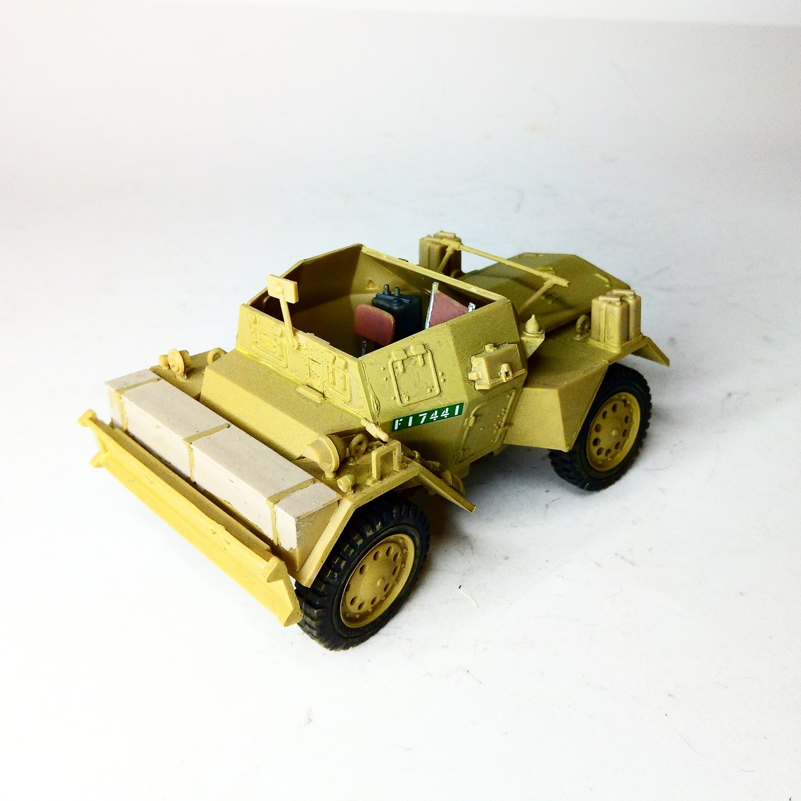
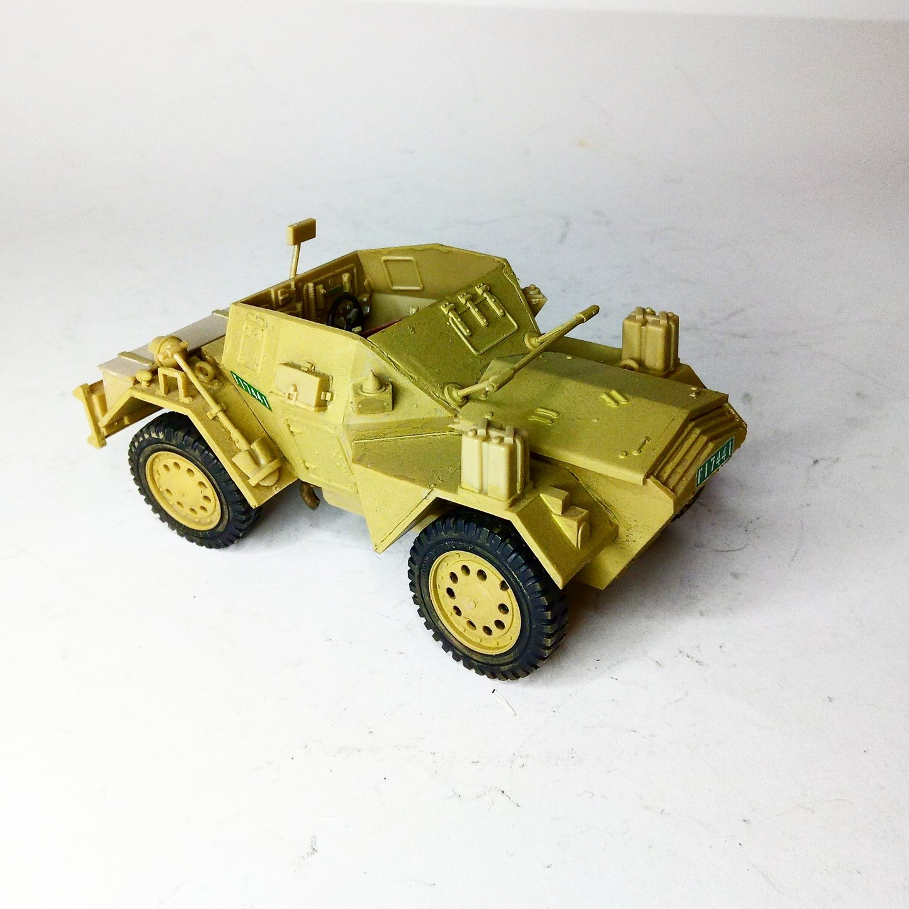

Mezzi militari · scale model archive
British Armored Scout Car "Dingo" Mk.II
British Armored Scout Car "Dingo" Mk.II — Kit: Tamiya, Scale: 1/35. #1/35 #Tamiya #Dingo

Photo gallery

English description
#1/35 #Tamiya #Dingo
Mezzi militari · scale model archive
British Armored Scout Car "Dingo" Mk.II — Kit: Tamiya, Scale: 1/35. #1/35 #Tamiya #Dingo

